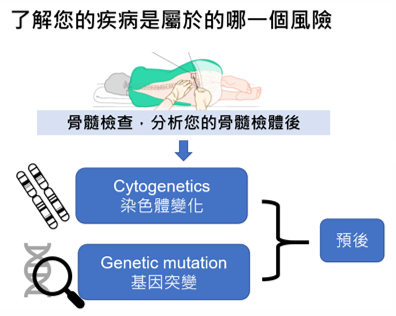

急性骨髓性白血病的治療成效(預後)，由許多因素共同決定。主要可以由以下幾點因素決定:
急性骨髓性白血病接受誘導性化學治療後，達到第一次緩解的所有病人。
急性骨髓性白血病的診斷，骨髓抽吸及切片檢查可以確定診斷，是必要檢查項目，也能依據檢查結果將疾病的預後好壞做風險分類。
2022歐洲白血病照護網更新風險分級如下

依照您的疾病風險分類，急性骨髓性白血病在接受首次化學治療（誘導性化學治療）達到完全緩解後，後續有接受鞏固性化學治療及接受異體周邊造血幹細胞移植兩個主要治療選項。
| 移植 | 不移植 | |
|---|---|---|
| 治療方式 | 進行異體造血幹細胞移植需經過3個步驟： 第一步：移植前接受調理化療，作用是將患者可能仍帶有癌細胞的骨髓清空以利幹細胞植入。 第二步：為輸注幹細胞。 第三步：為等待幹細胞生長。一般來說異體移植從輸注幹細胞到骨髓成功植入約需2-3週，期間可能發生的併發症如感染、排斥等現象將可能延後新生骨髓造血幹細胞長回之時間，而多數的併發症都是發生在第三步驟時候。 |
目前常用的標的鞏固治療配方為高劑量賽德薩(Cytarabine)，需進行3-4個循環的鞏固治療，每個循環須接受早晚一次隔日注射的賽德薩(Cytarabine)化學治療共5天，即第1, 3, 5天接受化學治療，每日兩劑共6劑，這樣就完成一個循環的治療，而下一個循環約間隔28天等待血球與體力恢復，間隔時間因恢復狀況而異。 |
| 治療地點 |
長青樓十樓骨髓移植中心 |
一般病房 |
| 住院天數 | 如上述，移植前化療端看使用的配方，一般來說約需要一週左右， 輸注捐贈者幹細胞童常只需要一天，若您的捐贈者為全相合親屬移植（如兄弟姊妹），視需要可能會連續輸注二至三天， 而後續等待幹細胞植入骨髓併且身體狀況恢復則需要2-3週，此時期病況變化較大，平均來說整個療程的總住院天數會需要1-1.5個月。 |
如上述，住院情況約為每個月須住院6天5夜接受化學治療，持續3-4次。 期間若因化療後血球低下產生合併症如發燒、腹瀉等，視病情需要而留院或住院治療。 |
| 治療時間長短 |
|
總治療時間約為4-5個月。期間會有血球降低導致感染、出血等併發症，血球及體力恢復後罕有治療相關併發症或副作用。 仍需定期於門診追蹤疾病是否穩定。 |
| 年齡限制 |
目前骨髓移植的年齡限制為65歲。 但需看病人的體能狀況決定，若65歲以下但長期臥床者也不合適，65-70歲之間需身體狀況絕佳者才考慮進行骨髓移植。 |
目前對於急性骨髓性血癌是以60歲以上以下分界定義老年或非老年。 但目前化療並無特定的年齡限制，端看病人的體能狀況、共病症等等決定是否能承受化療。 體能狀況最好是ECOG(美國東岸癌症臨床研究合作組織，Eastern Cooperative Oncology Group)分類中的0-1分，也就是日常生活能幾乎完全自理者，長期臥床之患者則需要謹慎考量。 |
慢性病限制 | 在骨髓移植前須評估心臟、肺臟、肝、腎等器官功能，因移植前調理化療有對臟器產生不良影響的可能（視使用藥物而定），若有器官功能不全者可能不合適，一般高血壓、糖尿病控制良好則不受影響。 | 有嚴重器官功能衰竭者可能較不適合，但一般高血壓、糖尿病並不受影響。 |
| 花費 |
|
化療費用目前健保均有給付，惟須使用特定標靶藥物如針對FLT3-ITD、IDH1、IDH2等用藥目前健保無給付，但標靶藥物之使用要看基因檢測結果，並非所有病人都需要且適用。 |
| 相關副作用 |
血球低下、感染、移植物對抗宿主疾病（排斥）為最重要三大副作用。 其他： 如嚴重黏膜破損、肝靜脈栓塞、植入症候群、全身放射照射導致肺纖維化、免疫性肺炎等等，但此類併發症相對少見且並非絕對會發生。 |
化療導致的血球低下、出血、感染。 高劑量賽德薩(Cytarabine)可能會有小腦毒性，造成暈眩等症狀。 |
| 生活品質 |
治療短期內，若合併較多併發症時，會因身體虛弱而有數個月無法生活自理的可能； 然而，恢復良好其生活品質可與正常人相同。 |
相對移植而言較佳，雖血球低下時可能也會有跟骨髓移植相同的身體虛弱症狀，但相對時間短，一般鞏固性治療導致的血球低下約為1週。 |
| 身體功能狀況 | 接受移植前三個月尚在恢復期，體力會明顯衰退，之後可慢慢恢復，恢復速度因人而異，約需休養半年至一年尚可完全正常生活（如工作）。 | 血球恢復後與正常狀況無異。 |
| 治療後藥物使用 |
移植後均需使用抗排斥藥，待體力恢復及無排斥狀況下可慢慢減藥，目標為完全停止抗排斥藥物。 移植後免疫力重建期間，可能需使用預防性抗生素。其他藥物同平時慢性病控制。 |
無特殊藥物必須。 |
| 選擇不造血幹細胞移植的理由 | (傾向接受化學治療)程度(傾向接受異體造血細胞) | 選擇造血幹細胞移植的理由 |
|---|---|---|
| 我希望先用化學治療控制疾病就好，暫時先不考慮異體造血幹細胞移植。 |
|
我知道治療過程比較辛苦，但是為了有機會治癒我希望接受異體造血幹細胞移植。 |
| 我害怕異體造血幹細胞移植帶來的副作用，我也擔心住在隔離病房會有適應的問題。 |
|
我可以理解異體造血幹細胞移植因為會有一段時間血球低下、免疫下降，所以需要住在隔離病房，也可能會因輕微血球偏低造成嚴重感染。 |
| 我希望不要有額外的花費。 |
|
我明白在配對和異體造血幹細胞移植治療的過程當中，可能會有必要的自費項目。 |
| 我和我的家人對於異體造血幹細胞移植還有需要討論的地方，暫時先採用化學資料。 |
|
我和我的家人都希望可以接受積極治療，希望能夠試試看異體造血幹細胞移植。 |
對於以上提供的資訊，您是否已經了解了呢
接受異體造血幹細胞移植後就不再需要鞏固化學治療了。
接受異體造血幹細胞移植後，疾病就不會再復發了。
急性骨髓性白血病高風險族群，接受異體造血幹細胞移植後之長期存活率較不接受造血幹細胞移植高。
急性骨髓性白血病高風險族群，接受異體造血幹細胞移植後之復發率較不接受幹細胞造血幹細胞移植低。
異體造血幹細胞移植的三項重要併發症為血球低下、感染和移植物對抗宿主疾病（排斥）。
您現在確認好治療方式了嗎
我已經確認好想要的治療方式，我決定選擇：（下列擇一）